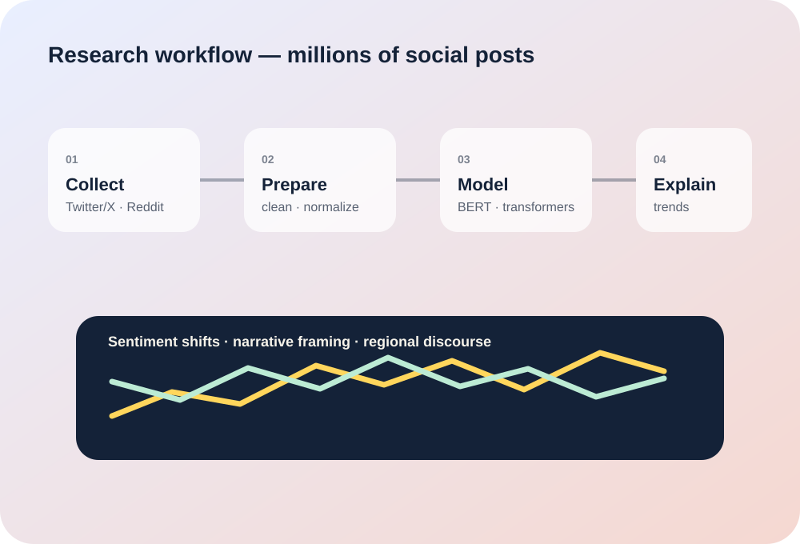

Experience
Research at data scale.
My research experience at NJIT pushed me beyond classroom-scale datasets into large-scale data collection, preprocessing, transformer-based NLP, sentiment analysis, topic modeling, and interpretation.

Research Assistant
New Jersey Institute of Technology (NJIT) · Newark, NJ
Investigated how social-media bias influences public perception of geopolitical events using large-scale Python data analysis and transformer-based NLP across millions of posts.
What it demonstrates
From raw data to interpretable results.
The experience strengthened my ability to work across the full analysis chain: data quality, preprocessing, model selection, representation, interpretation, and communication of findings.
- Python-based large-scale data analysis
- BERT and transformer NLP workflows
- Sentiment analysis and topic modeling
- Feature engineering and embeddings
- Data visualization and research communication